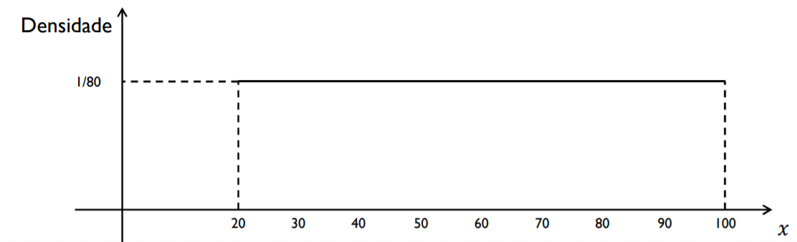

Variáveis Aleatórias Contínuas
Introdução
Uma variável aleatória é classificada como contínua se assume valores em qualquer intervalo dos números reais, ou seja, um conjunto de valores não-enumerável. Dessa forma, pode se observar que não é possível atribuir probabilidades para um ponto específico, apenas para intervalos da reta.
Exemplos:
Peso de animais;
Tempo de falha de uma estrutura metálica;
Resistência à compressão do concreto;
Altura da maré em uma hora específica;
Salinidade da água do mar;
Retorno financeiro de um investimento.
Neste sentido, a natureza dessas variáveis aleatórias nos mostra que não podemos atribuir probabilidades à valores específicos, pois há uma quantidade não enumerável (infinita) de valores num intervalo entre dois pontos. Consequentemente, atribui-se probabilidades à intervalos de valores, por meio de uma função de \(X\). Portanto, as probabilidades são representadas por áreas sob a curva.
Graficamente, temos
knitr::include_graphics("img/densidade1.png")Observa-se que nem todos os \(k =11\) intervalos (do histograma) estão sob a curva da função de \(X\). Além disso, alguns intervalos não representam a área sob a curva. Porém, aconteceria se dividissémos em \(k = 22\) intervalos? Vamos ver por um outro exemplo gráfico.
knitr::include_graphics("img/densidade2.png")
Assim, fazendo-se \(k \rightarrow \infty\) (ou \(n \rightarrow \infty\)), teríamos que cada intervalo represente alguma área (ou probabilidade) sob à curva.
Vamos avaliar essa ideia com um exemplo prático.
Exemplo 1:
Estudos anteriores revelam a existência de um grande lençol freático (ou de água) no subsolo de uma região. No entanto, sua profundidade ainda não foi determinada, sabendo-se apenas que o lençol pode estar situado em qualquer ponto entre 20 e 100 metros. Vamos supor que selecionamos, ao acaso, um ponto nessa região e dispomos de uma sonda que, ao fazer a perfuração, detecta a profundidade do reservatório de água.
Seja \(X\) uma variável aleatória contínua tal que
\[ X: \text{Profundidade do lençol freático}\]
A partir disso a ideia é propor um função para \(X\) e calcular algumas probabilidades de interesse.
Observação 1: É razoável assumir que a sonda pode parar em qualquer ponto entre 20 e 100 metros, sem que tenhamos motivos para privilegiar essa ou aquela profundidade, ou seja, consideramos todos os pontos como equiprováveis.
Observação 2: Ao pensar em atribuir uma probabilidade para cada ponto, chegamos a uma dificuldade, como temos infinitos pontos e todos são equiprováveis, teríamos infinitas probabilidades o que causaria uma probabilidade total de valor infinito, e não 1 como deve ser.
A solução, neste caso, é não considerar valores únicos no cálculo da probabilidade, e sim intervalos de valores. Assim, o espaço amostral correspondente é \([20,100]\) e as profundidades são igualmente prováveis.
Então,
Suponha que dividimos o espaço amostral em 8 intervalos de comprimento 10.
É razoável atribuir aos intervalos a probabilidade \(\frac{1}{8}\), correspondendo à relação entre o comprimento de cada um deles e o comprimento do espaço amostral.
knitr::include_graphics("img/densidade3.png")
E se dividissémos o espaço amostral em 16 intervalos ?
knitr::include_graphics("img/densidade4.png")
Assim, aumentando cada vez mais o número de intervalos, diminuindo suas amplitudes, até, obtermos (teoricamente) infinitos intervalos e o seguinte histograma
knitr::include_graphics("img/densidade5.png")
Assim, a probabilidade de uma variável aleatória contínua é definida pela área sob à curva de uma função positiva, denominada função densidade de probabilidade. Observa-se que a função densidade não é uma probabilidade, mas uma função que auxilia na determinação de probabilidades.
Então, para a variável aleatória contínua \(X\) representando a profundidade do lençol freático, a função densidade é dada por
\[ f(x) = \begin{cases} \frac{1}{80} & \quad \text{se } \quad 20 \leq x \leq 100 \\\\ 0 & \quad \text{caso contrário} \end{cases} \]
Função Densidade
Definição 1.
Diz-se que \(X\) é uma variável aleatória contínua, se existir uma função \(f\) , denominada função densidade de probabilidade (fdp) de \(X\) que satisfaça às seguintes condições:
- É uma função não negativa
\[f(x) \geq 0\]
- A área total sob à curva deve ser igual a 1
\[\int_{-\infty}^{+\infty} f(x) \, dx = 1\]
Vamos considerar uma função densidade \(f\) e que nosso interesse é calcular a probabilidade da variável aleatória \(X\) observar valores num intervalo \([a,b]\).
Pergunta: Como calcular \(P[a \leq X \leq b]\) ?
Primeiramente, vamos analizar o gráfico da função \(f\), ou seja,
knitr::include_graphics("img/densidade6.png")
Assim, a funçãfo densidade probabilidade atribui probabilidades à intervalos de valores do tipo \([a,b]\) e é calculada por
\[ P[a \leq X \leq b] = \int_{a}^{b}f(x)\,dx.\] Observações:
- Seja \(a \in X\) um valor observado qualquer. Então, \(P[X = a] = 0\), e consequentemente
\[P[a \leq X \leq b] = P[a \leq X < b] = P[a < X \leq b] = P[a < X < b]\]
Qualquer função \(f(\cdot)\) que seja não negativa e cuja área total sob a curva seja igual à unidade caracterizará uma variável aleatória contínua.
A função de distribuição acumulada (fda) para uma variável aleatória \(X\) é definida por
\[F(x) = P[X \leq x] = \int_{-\infty}^{x} \,f(t)\,dt,\] em que \(f(t)\) é uma fdp. Isto significa que \(F^{\prime}(x) = \frac{dF(x)}{dx} = f(x)\).
Exemplo 2
Seja \(f\) uma função tal que
\[ f(x)= \begin{cases} \frac{3}{2} \, x^2, & \text{se } -1 \leq x \leq 1 \\\\ 0, & \text{caso contrário} \end{cases} \]
Verifique se essa função é uma função densidade.
Calcule:
b1. \(P[X > 0]\)
b2. \(P[X > 1/2]\)
b3. \(P[-1/2 \leq X \leq 1/2]\)
b4. \(P[X < -2]\)
b5. \(P[X < 1/2]\)
b6. \(P[X < 0 \,\, \cup \,\, X > 1/2]\)
Solução a. :
Para verificar se a função \(f\) é densidade probabilidade, precisamos observar duas condições. A primeira é que \(f\) seja uma função não-negativa, isto é, \(f(x) \geq 0\).
Observa-se que
\[\text{Para} \,\,\, x \in [-1,1] \,\,\, \text{a imagem de f está contida em} \,\, \left[0,\frac{3}{2}\right]\]
Logo, \(f(x) \geq 0\).
A segunda condição é que a área sob à curva seja igual a 1, isto é,
\[\int_{-1}^{1}f(x)\,dx = \frac{3}{2}\,\int_{-1}^{1}\,x^2\,dx = \frac{3}{2} \left.\frac{x^3}{3}\right|_{-1}^{1} = 1.\]
Portanto, \(f\) é função densidade probabilidade.
Solução b1. :
\[P[X > 0] = \int_{0}^{1}f(x)\,dx = \frac{3}{2}\,\int_{0}^{1}\,x^2\,dx = \frac{3}{2} \left.\frac{x^3}{3}\right|_{0}^{1} = \frac{1}{2}.\]
Valor Esperado e Variância
A esperança de uma variável aleatória contínua \(X\) tem o mesmo sentido e interpretação da esperança de uma variável aleatória discreta, ou seja, é a média ou valor esperado de \(X\). Neste caso, a esperança é obtida por meio da integral do produto de \(x\) com a função \(f(x)\), no intervalo definido pelo domínio de \(f\).
De uma maneira geral,
\[\mu = \mbox{E}(X) = \int_{-\infty}^{+\infty}x \cdot f(x)\,dx.\]
A variância de uma variável aleatória \(X\), como já vimos, fornece o grau de dispersão dos valores de uma variável aleatória em relação à sua média \(\mu\). A forma geral para o cálculo é representada por
\[ \mbox{Var}(X) = \mbox{E}\,\{[X - \mbox{E}(X)]^{2}\} = \mbox{E}\,[(X - \mu)^{2}].\] No entanto, uma foma mais fácil operacionalmente pode ser deduzida a partir da equação acima, ou seja
\[\mbox{Var}(X)= \mbox{E}(X^{2}) - [\mbox{E}(X)]^{2},\] em que
\[ \mbox{E}(X^{2}) = \int_{-\infty}^{+\infty}x^{2}\cdot f(x)\,dx.\] Exemplo 3
Seja \(X\) uma variável aleatória contínua com função densidade dada por
\[ f(x)= \begin{cases} \frac{3}{2} \, x^2, & \text{se } -1 \leq x \leq 1 \\\\ 0, & \text{caso contrário} \end{cases} \]
- Determine a \(\mbox{E}(X)\), \(\mbox{Var}(X)\) e o desvio-padrão \(\sigma_{X}\) da variável aleatória \(X\).
Solução:
A esperança de \(X\) é dada por
\[\mu = \mbox{E}(X) = \int_{-1}^{1}x \cdot f(x)\,dx = \frac{3}{2}\,\int_{-1}^{1}\,x^3\,dx = \frac{3}{2} \left.\frac{x^4}{4}\right|_{-1}^{1} = \frac{3}{2} \left(\frac{1}{4} - \frac{1}{4}\right) = 0.\]
Então, para o cálculo da variância de \(X\), temos
\[\mbox{Var}(X) = \mbox{E}(X^2) = \int_{-1}^{1}x^2 \cdot f(x)\,dx = \frac{3}{2}\,\int_{-1}^{1}\,x^4\,dx = \frac{3}{2} \left.\frac{x^5}{5}\right|_{-1}^{1} = \frac{3}{2} \left[\frac{1}{5} - \left(-\frac{1}{5}\right)\right] = \frac{3}{5}.\]
Portanto, o desvio-padrão de \(X\) é dado por
\[\sigma_{X} = \sqrt{\mbox{Var}(X)} = \sqrt{\frac{3}{5}} = 0.774\]
Exercícios
- A duração, em anos, de certa lâmpada especial é uma variável aleatória contínua com densidade dada por
\[ f(x) = 2\,\rm{e}^{-2\,x} \quad \text{se} \quad x > 0\]
Qual é a probabilidade da lâmpada durar até 2 anos ?
Qual é o valor esperado do tempo de duração (em anos) de uma certa lâmpada ?
- A variável aleatória contínua \(X\) tem função de distribuição acumulada (fda) dada por
\[ F(x)= \begin{cases} 0, & \text{se} \quad x < 1 \\\\ \frac{1}{c}(1 - \rm{e}^{-(x-1)}), & \text{se} \quad 1 \leq x < 2 \\\\ \frac{1}{c}(1 -\rm{e}^{-1} + \rm{e}^{2} - \rm{e}^{-2(x-1)}) , & \text{se} \quad x \geq 2 \end{cases} \]
Obtenha o valor de \(c\).
Obtenha a correspondente função densidade da variável \(X\).
Determine \(P(X \geq 3/2 | X < 4)\).

Este conteúdo está disponível por meio da Licença Creative Commons 4.0